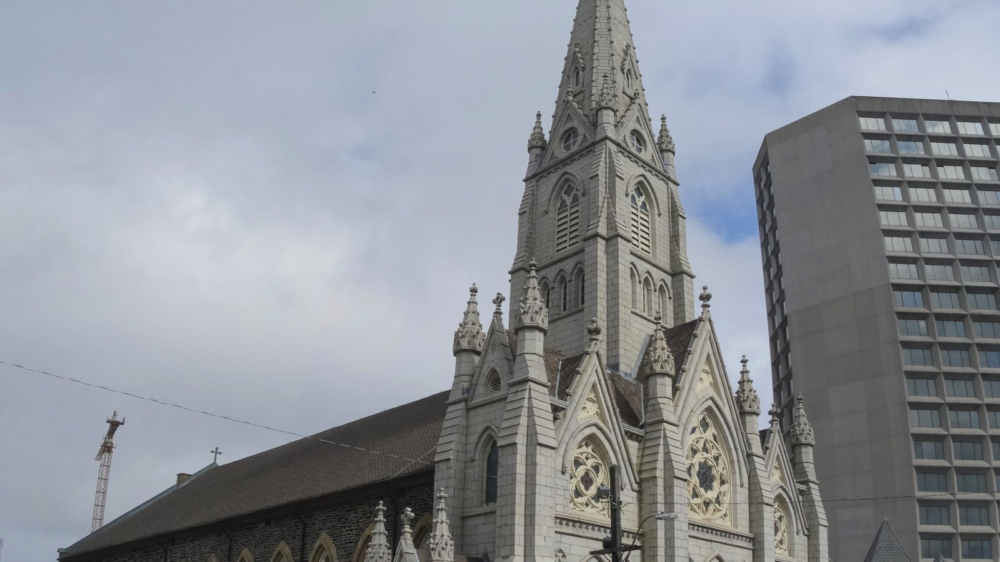

Bine ați venit
Bine ați venit pe site-ul parohiei.
Saint Mary's Cathedral Basilica, fondată în anul 1820, este situată în Halifax, Nova Scotia. Acest site este o oglindă neoficială, pregătită sub doctrina EVE Glyph Design, cu aceeași grijă editorială ca site-ul oficial al parohiei. Sursa oficială rămâne stmcathedral.com.
O parohie, un popor
Credința trăită local, împreună cu o comunitate care se roagă, celebrează și îi îngrijește pe ceilalți.
Orarul Sfintei Liturghii
| Ziua | Ora |
|---|---|
| Duminică | 8:00 AM · 10:30 AM · 5:00 PM |
| Luni și miercuri | 7:30 AM & 12:15 PM |
| Marți | 12:15 PM & 6:30 PM |
| Joi – sâmbătă | 12:15 PM |